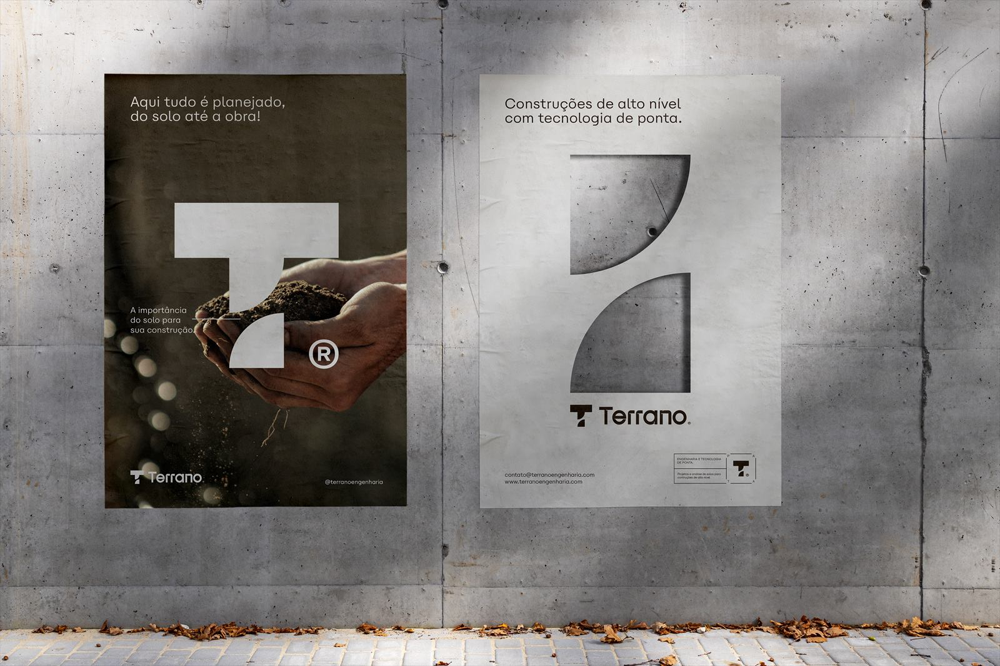

Construímos sobre o que conhecemos: o seu terreno.
Obras residenciais, comerciais e reformas executadas por quem domina a engenharia do solo à estrutura. Planejamento real, orçamento transparente e qualidade comprovada em ensaio.
Da casa ao galpão, com o mesmo rigor técnico.
Atendemos pessoas físicas, empresas e investidores. Cada obra tem um engenheiro responsável do início ao fim.
Residencial
Casas térreas, sobrados e residências de alto padrão, do projeto aprovado à entrega das chaves.
Comercial e industrial
Salas comerciais, lojas, galpões e edificações corporativas com cronograma pensado para a sua operação.
Reformas e ampliações
Intervenções em imóveis existentes com avaliação estrutural prévia, sem improvisos.
Gestão de obras
Gerenciamento e fiscalização técnica para quem já tem equipe, mas precisa de engenharia no comando.

A engenharia de solo mora dentro da construtora.
Construtoras costumam terceirizar os estudos do terreno e o controle de qualidade. Na Terrano, tudo isso é feito pela mesma equipe — o que significa respostas mais rápidas, menos retrabalho e uma única empresa responsável pelo resultado.
- 01Topografia e locação da obra feitas por nós
- 02Sondagem SPT para definir a fundação adequada
- 03Controle tecnológico do concreto em cada concretagem
- 04Laudos, relatórios e ART emitidos internamente
Da primeira conversa à entrega das chaves.
Entendemos o projeto
Conversa sobre objetivos, prazo e investimento, com visita ao terreno ou imóvel.
Levantamos os dados
Topografia e sondagem quando necessárias, para orçar com base em informação real.
Orçamento e cronograma
Proposta detalhada por etapa, com modalidade de contratação e prazos definidos.
Obra acompanhada
Execução com relatórios periódicos, ensaios de concreto e entrega documentada.
Perguntas sobre construir com a Terrano
Vocês constroem a partir do meu projeto ou também fazem o projeto?
Quais modalidades de contratação vocês oferecem?
Preciso fazer sondagem antes de construir?
Em quais cidades vocês atendem?
Vamos conversar sobre a sua obra?
Conte o que você quer construir. Fazemos uma visita técnica e retornamos com o melhor caminho e o orçamento.
Chamar no WhatsApp- WhatsApp(45) 99937-1887
- E-mailcontato@terranoengenharia.com
- Instagram@terranoengenharia
- EndereçoRua Ali Osman, 222 — Jardim Panorama
Foz do Iguaçu — PR